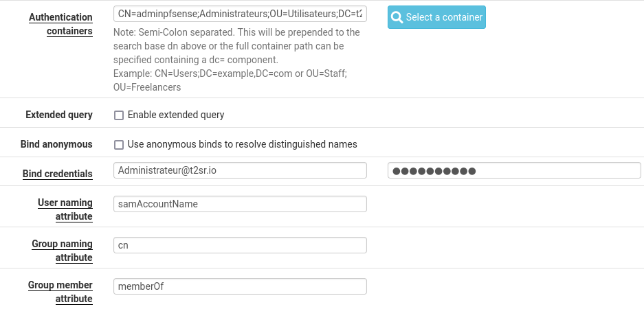
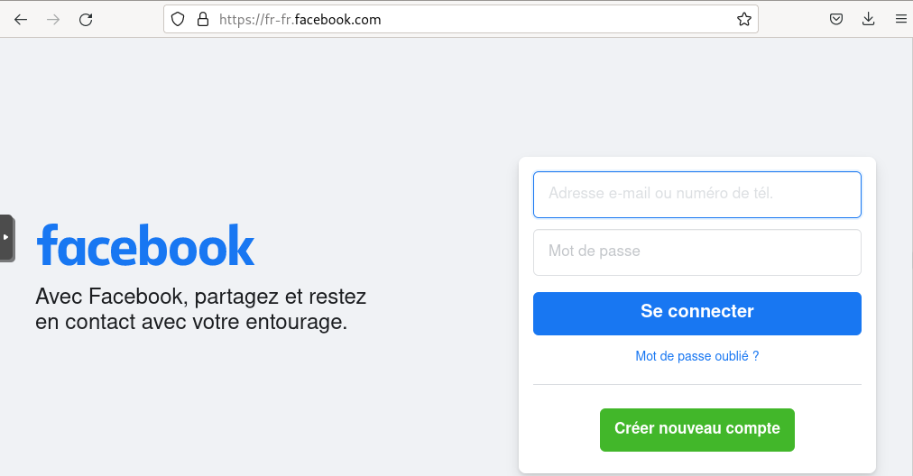
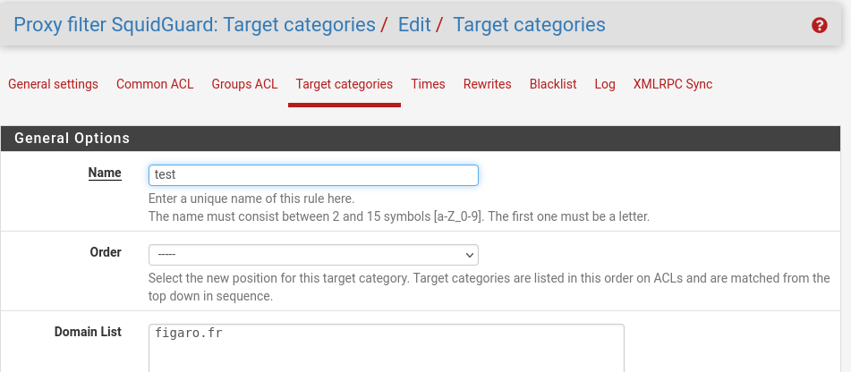
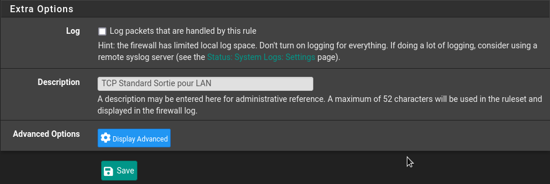

Serveur pfSense
Objectif et environnement
Objectif
Installer et configurer pfSense CE 2.6.0 en tant que pare-feu, proxy et portail captif. Il sera également le serveur DHCP de la plateforme.
Environnement
Matériels :
Dell PowerEdge r240 avec Proxmox 7.2-7
Adressage des VMS :
Réseaux : 172.28.0.0/16
pfSense: FW-PROXY 172.28.1.254
client Windows 10 : CLI-WIN-01, DHCP
client Linux Debian : CLI-DEB-01, DHCP
Documentation
Processus
Installation
Nous avons téléchargé l’ISO d’installation sur le site officiel :
https://www.pfsense.org/download/
Nous avons booté sur l’ISO :
Choix de la langue
Configuration les adresse IP du pfSense
Choix 2
Choix 2
J’ai choisi entrée deux fois puis n pour le serveur dhcp.
Les adresses IP sont configurées
Configuration du pfSense
La VM pfSense est accessible sur l’adresse 172.28.1.254/16
Note
Login par défaut : admin Password par défaut : pfsense
Configuration générale
System / General Setup

Configurations accès au serveur
Système > Advanced > Admin Access
J’ai choisi l’accès via HTTPS
J’ai activé connexion via SSH
Test de la connexion SSH
La connexion fonctionne.
Configuration serveur DHCP
Services / DHCP Server / LAN
Vérification sur un client
La carte réseau est configuré dans le réseau 172.16.0.0/16 mais il a accès à l’internet. La passerelle par pfSense est fonctionnelle.
Connexion et authentification par Active Directory
System > User Manager > Authentification Servers > Add

Création d’un groupe adminpfsense sur l’AD avec deux utilisateurs
Sur la VM pfSense
System > User Manager > Groups > Add
Ajout la groupe adminpfsense que nous avons créé sur l’AD
Nous avons donné accès à ce groupe pour consulter toutes les pages
Test d’authentification
Diagnostics > Authentification
Je vais tester la connexion avec un utilisateur qui fait partie du groupe adminpfsense.
Maintenant, les utilisateurs appartenant au groupe adminpfsense peuvent administrer pfSense.
Mise en place serveur Proxy
Installation des packages Squid et Squidgard
System > Package Manager > Available Packages
Création d’un certificat de sécurité autosigné
System > Certificate Manager > Add
Activation Squid Proxy
Services > Squid Proxy Server
Configuration Local Cache
General
Spécifier les réseaux qui ont accès au proxy
ACLs
J’ai exporté le certificat et j’ai installé sur mes clients
Test avec un client Windows
Installer certificat
Double clic sur le certificat puis installer
Test avec le client Linux
J’ai créé un dossier pour accueillir notre certificat
mkdir /usr/local/share/ce-certificates/t2sr
cp t2sr_ssl_cert.crt /usr/local/share/ce-certificates/t2sr
J’ai installé le certificat
update-ca-certificates
Je test avec la page d’accueil Facebook
Avant l’application du blacklist

Apres l’application du blacklist
Configuration SquidGard
Une autre manière de créer de site blacklisté est d’utiliser SquidGard
Services > SquidGard Proxy Filter
Target Catégories
J’ai créé un target nommé test avec un nom domaine à refuser

Le résultat
Blacklist sous SquidGard
Nous pouvons uploader une blacklist archive. Il s’agit d’une collection des sites non désirables. J’ai utilisé celui créé par l’université de Toulouse :
http://dsi.ut-capitole.fr/blacklists/download/blacklists_for_pfsense.tar.gz
Une fois renseigné j’ai cliqué sur download
Common ACL
Nous retrouvons le target catégorie test que nous avons créé et également la liste importée que nous pouvons peaufiner par la suite.
Nous pouvons visualiser la liste de ses sites si besoin
Configuration du firewall
Firewall > Roules > LAN
J’ai désactivé l’accès en IPv6 (nous utilisons que des adresses en IPv4)
Créer Firewall Aliases
Firewall > Rules > LAN
L’état actuel du Firewall
Tous les ports sont ouverts pour une communication vers l’extérieur (LAN vers WAN).
Nous allons autoriser uniquement les ports suivants :
80 : http
443 : https
22 : ssh
53 : dns (tcp/udp)
123 : ntp
Ajout des ports TCP
Firewall > Aliases > Ports > Add
Ajout des ports UDP
J’ai choisi Apply changes
Firewall > Rules > LAN > Add
J’ai choisi comme destination la TCP_standard_Sortie précédemment crée.
J’ai ajouté un commentaire, puis j’ai sauvegardé

La règle a été crée
J’ai ajouté une deuxième règle pour DNS(UDP) et NTP
Création d’une troisième règle qui refusera tous les autres ports :
Firewall > Rules > LAN
J’ai ajouté un commentaire, puis cliqué sur Save.
Mise en Place Portail Captif
Services > Captive Portal > Add
Pour valider la configuration j’ai cliqué sur Save.
Adresse du portail captif : http://172.28.1.254:8002
Conclusion
La configuration du pfSense s’est bien déroulée. L’utilisation du portail captif nécessite d’avoir une carte réseaux supplémentaire afin de ne pas interférer avec les VM sur le réseau de production.